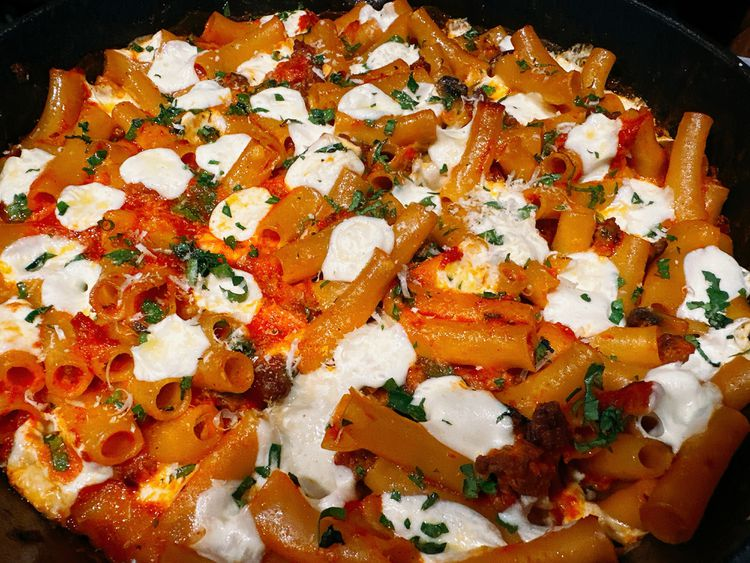

Spicy Sausage Pasta Bake

Description
This spicy sausage pasta bake is a hearty,
comforting dish that combines bold flavors, rigatoni pasta,
and a rich, flavorful creamy tomato sauce.
Ingredients
- 1 pound rigatoni pasta
- 1 tablespoon olive oil
- 2 teaspoons butter
- 1 small onion, diced
- 1 cup sliced mushrooms
- 1/2 pound 93% lean ground beef
- 1/2 pound hot Italian sausage
- 4 cloves garlic, minced
- 1 1/2 teaspoons Calabrian chili paste, or to taste
- 1 (10 ounce) can diced tomatoes with green chiles
- 22 ounces marinara sauce
- 1 ounce creme fraiche
- 1 cup fat-free half-and-half
- 1 cup heavy cream
- 8 ounces pearl mozzarella, broken into pieces
- 1 tablespoon chopped fresh parsley, or as needed
Method
- Preheat the oven to 375 degrees F (190 degrees C).
- Fill a large pot with lightly salted water and bring to a rolling boil.
Stir in rigatoni and return to a boil. Cook pasta uncovered for 7 minutes,
stirring occasionally. Drain.
- Meanwhile, add olive oil and butter to a heavy cast iron or other ovenproof skillet.
When butter is melted, add onion to the skillet, and sauté until translucent, 3 to 4 minutes.
Add mushrooms, and sauté until softened, about 3 minutes.
- Add beef and sausage. Cook, breaking up meat with a spatula, until browned and crumbly, 5 to 7 minutes.
- Add garlic, Calabrian chile paste, and RoTel. Sauté for about 1 minute. Stir in marinara sauce.
Stir in crème fraîche, half-and-half, and whipping cream. Fold in rigatoni until combined;
fold in half of mozzarella. Scatter remaining mozzarella on top of skillet.
- Bake in the preheated oven until bubbly, about 30 minutes.
Scatter parsley over top. Serve immediately.
Back Home